Product Designer
UI · Service Design · User Research · Prototyping
With nearly a decade of UX design experience at Samsung Electronics, I specialize in creating accessible, user-centered digital experiences across mobile platforms, smart home appliances (IoT), and applications. Having evolved from a GUI designer into an end-to-end product and service designer, my expertise spans UI design, service design, user research, and prototyping.
By leveraging human-centered frameworks — such as customer journey mapping, service blueprints, and pain point identification — I bridge design thinking with business objectives to transform deep user insights into successful, market-ready products.
Featured Projects
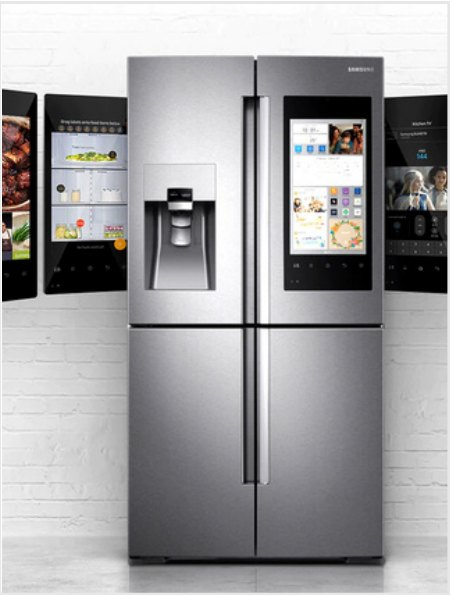
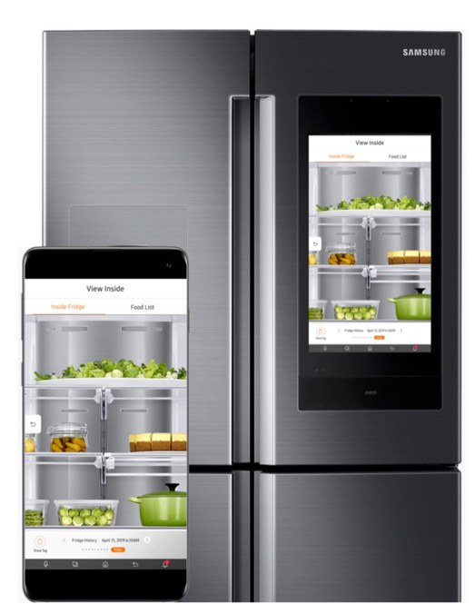
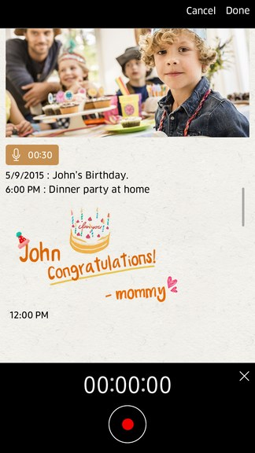
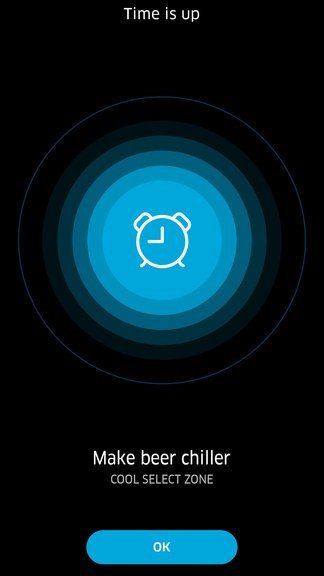
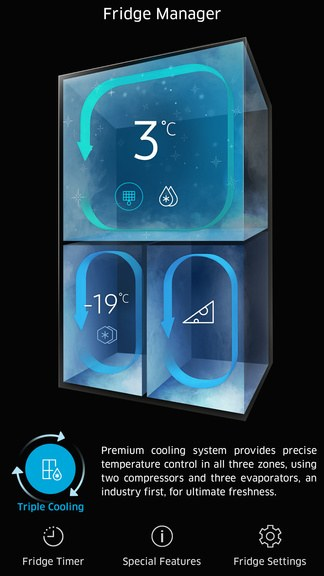
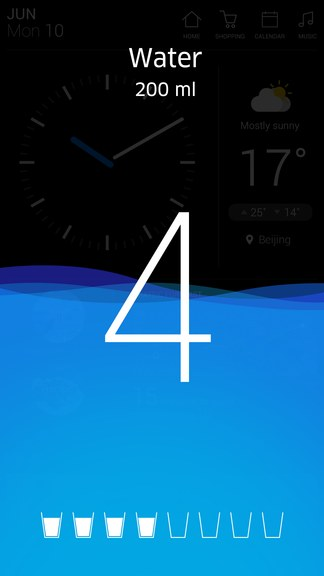
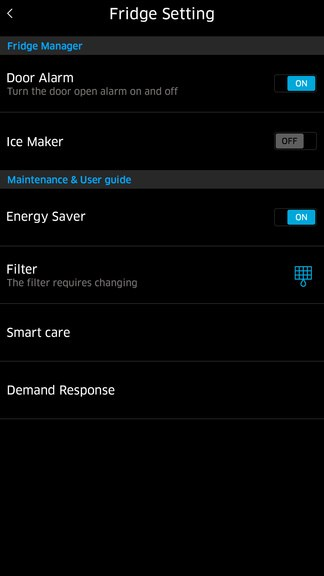
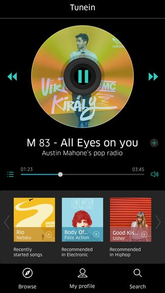
Family Hub is a high-definition touchscreen mounted on a refrigerator door, providing useful and engaging information for the whole family. It is a screen nobody chooses to open — it is simply there, in the kitchen, glanced at by everyone in the household throughout the day.
The panel's View Inside feature lets users check the contents of their fridge on the way home to see what they need for dinner — like checking whether they are low on milk. It also tracks expiration dates for food items and leverages Bixby to simplify food management, helping users plan meals like a pro. Around that core sit the everyday screens: shared memos and photos, a Cool Select Zone timer, the Fridge Manager view of all three cooling zones, a measured water dispenser, settings, and media.
My contribution began with GUI trend research and ran through the foundations the rest of the panel is built on — basic rules, winset, and Settings UX design — as well as key screen design. Because this display is fixed to a refrigerator door rather than held in the hand, I also worked on GUI accessibility and reachability, optimizing the interface for the full range of user heights and viewing angles rather than for a single ideal posture.
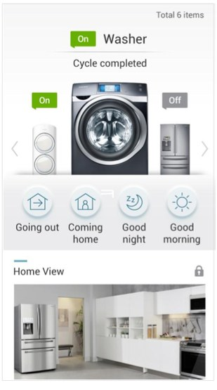
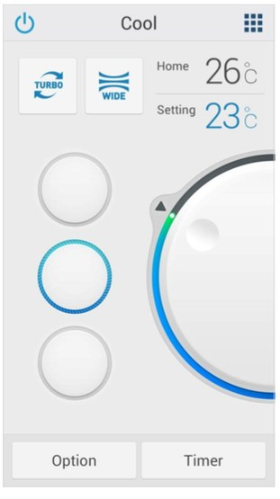
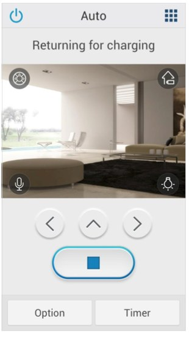
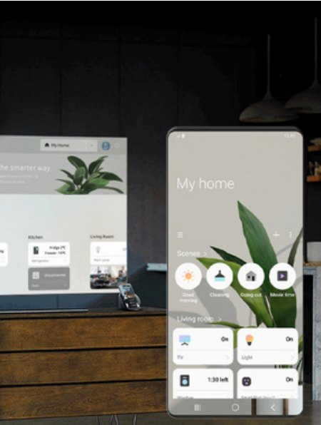
Cornerstone is an integrated mobile application for monitoring and controlling a whole house of appliances — washers, refrigerators, air conditioners, and robot vacuums — from a single interface, instead of one app per device.
The app is organized around intuitive mode presets — Going Out, Coming Home, Good Night, Good Morning — so that the intentions people actually have take one tap, rather than a walk through every device in the house. Real-time device status sits on the same screen, alongside a Home View that places those devices in the rooms they belong to.
Each device then gets a control screen shaped around its own primary action: a dial for temperature on the air conditioner, a live camera view and directional controls for the robot vacuum, cycle status for the washer. The shared layer is the shell and the status model; the differences are where each appliance genuinely differs.
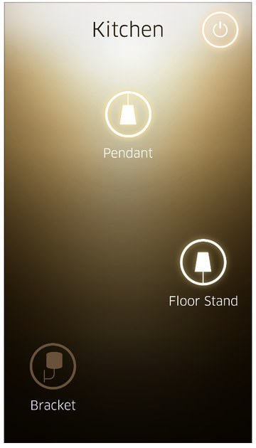
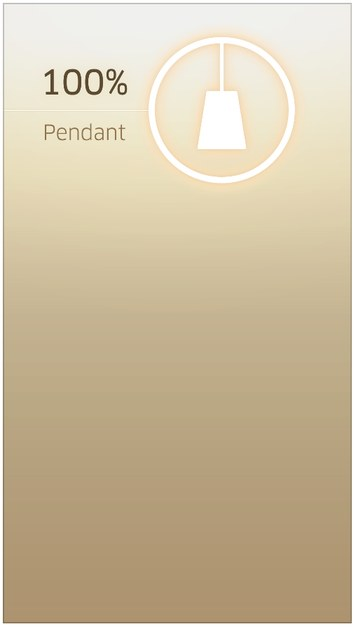
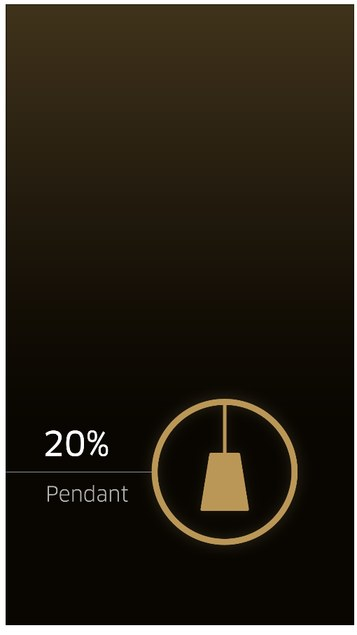
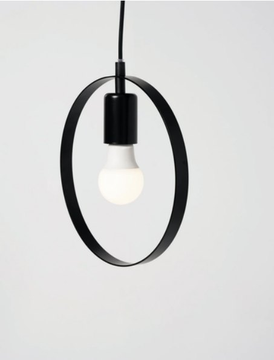
An intuitive lighting control app for connected lamps, covering everything from basic power functions to precise brightness levels from the palm of the hand.
Intuitive visual representation. Each lamp type — pendant, floor stand, wall bracket — has its own clear, simplified icon. The background is dynamic and colored: warm and bright at full power, transitioning to darker, less warm tones at lower brightness levels. The screen behaves like the light it controls, so the current state is readable before any number is.
Contextual overview. Lamps are grouped by room — 'Kitchen', for example — making devices easy to find and control by location, and a central control screen shows multiple lamps and their individual power status at a glance.
Streamlined control. The design focuses on the most common actions, power and brightness, with simple tap and slider interactions, and avoids deep menus so that the most critical controls stay within immediate reach.
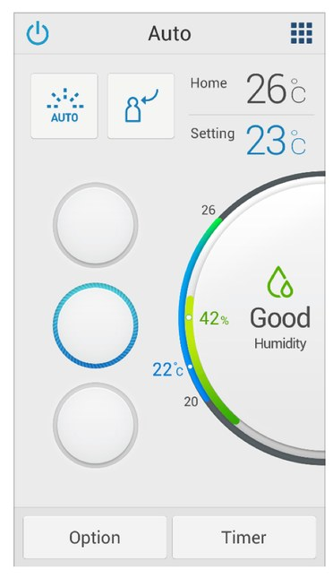
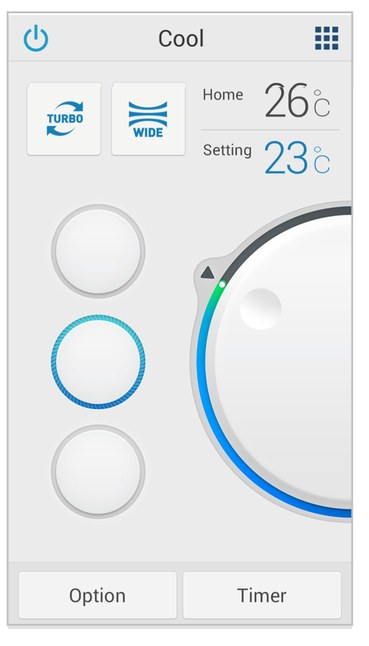
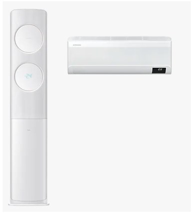
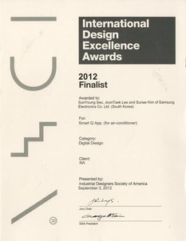
Smart Q is an air conditioner control application installed on a smartphone and used both indoors and outdoors, supporting voice control and touch control. I worked on it end to end.
The product centers on smart cooling and humidity control. An intelligent cooling system maintains ideal indoor temperatures through automated climate tracking; automated humidity regulation keeps indoor humidity at optimal levels of 40–60% for continuous comfort; and the two are held in balance against each other, improving comfort while preventing excessive energy use.
That balance is what the interface had to make legible. A single dial carries the current room temperature, the target setting, and the humidity reading together, so the state of the room and the state of the machine can be read in one glance — and the humidity band is labelled in plain language, 'Good', rather than left as a number to interpret.